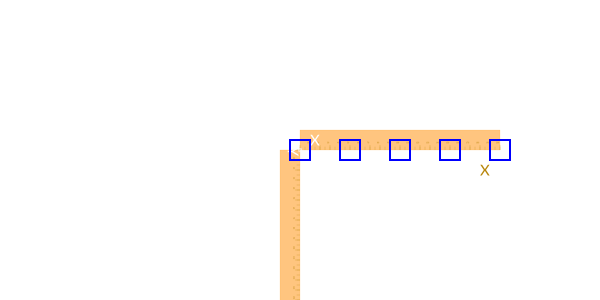
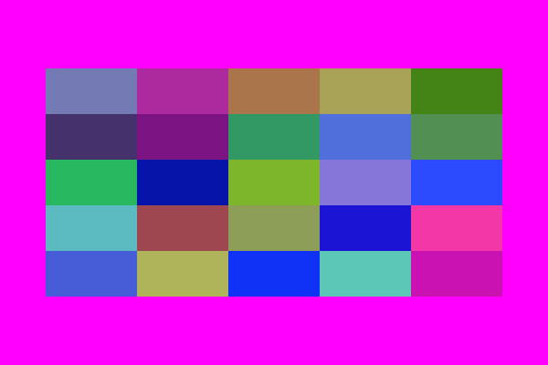
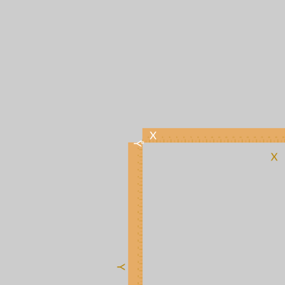
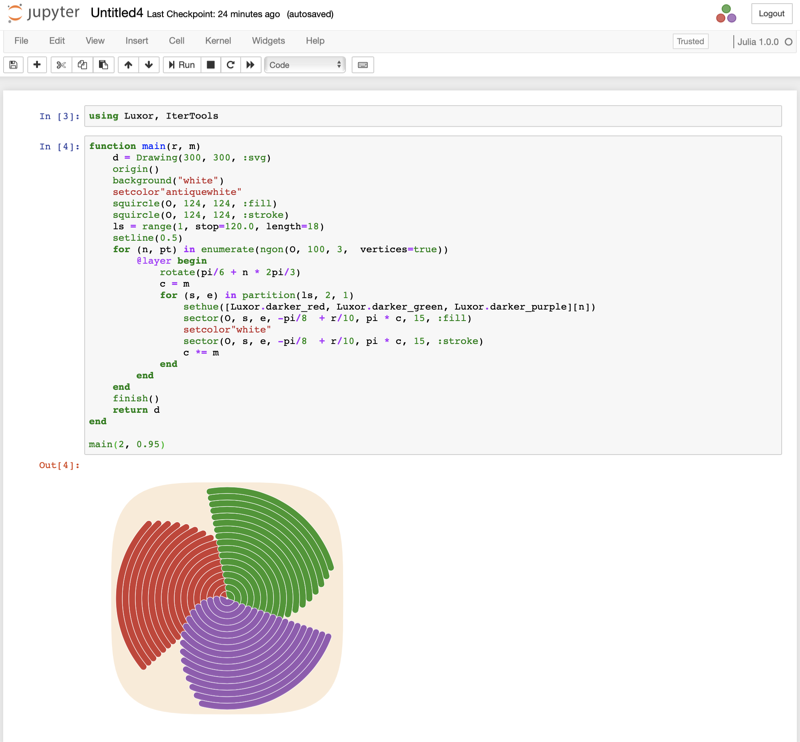
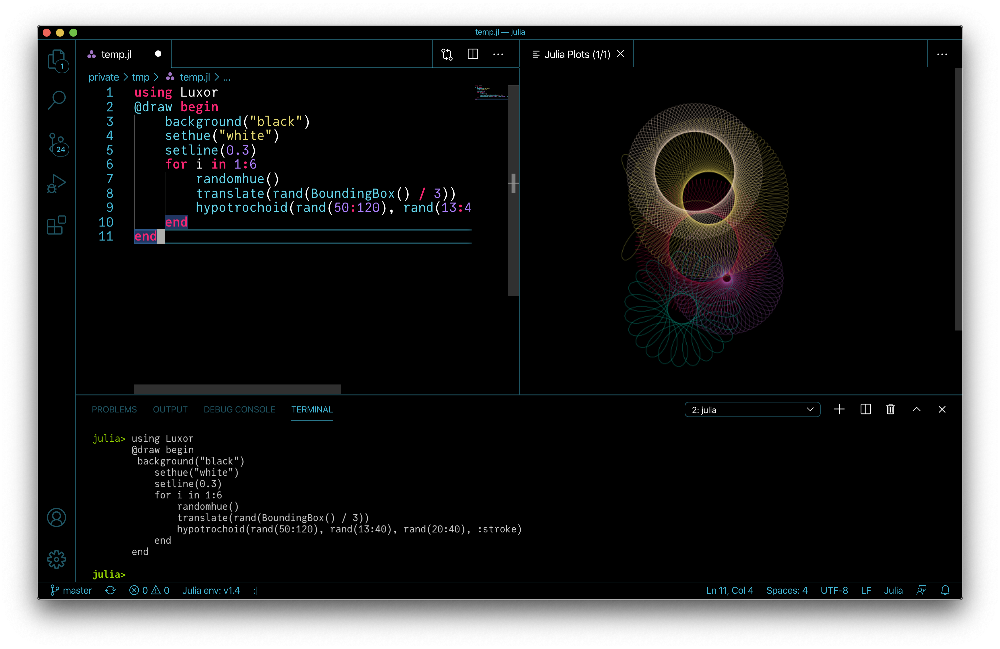
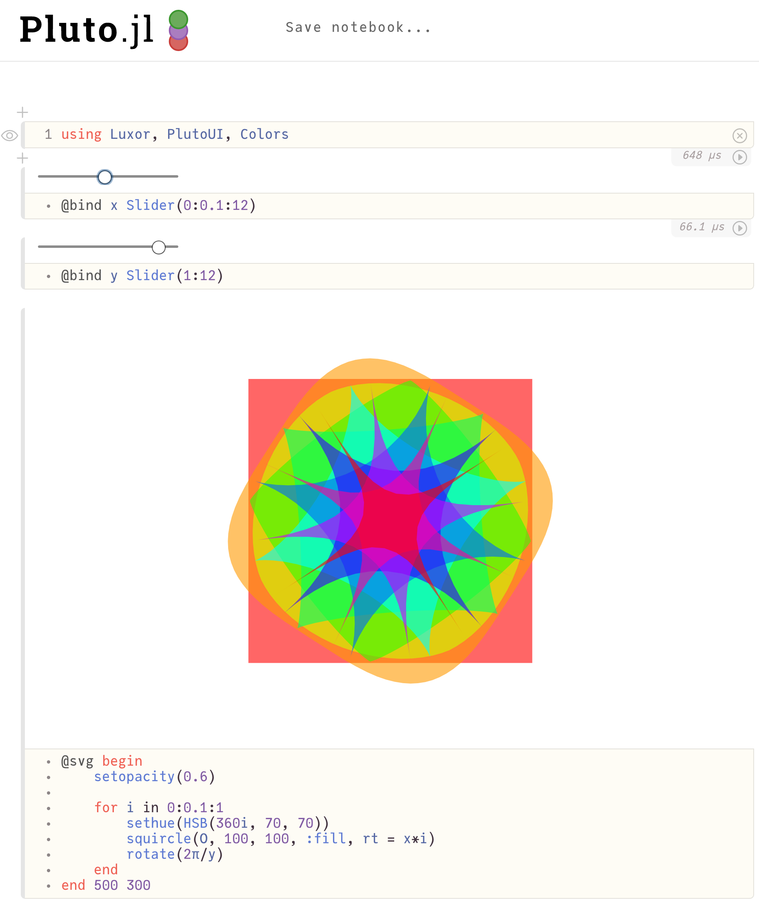

The drawing model
The underlying drawing model is that you build paths, and these are filled and/or stroked, using the current graphics state, which specifies colors, line thicknesses, scale, orientation, opacity, and so on.
You can modify the current graphics state by transforming/rotating/scaling it, setting color and style parameters, and so on. Subsequent graphics use the new state, but the graphics you've already drawn are unchanged.
Many of the drawing functions have an action argument, supplied as a keyword argument (eg action=:fill). This action determines what happens to the current path. It can be :fill, :stroke, :fillstroke, :fillpreserve, :strokepreserve, :clip, or :path. The default is usually :path, ie. add the graphics to the current path.
The main Julia data types you'll encounter in Luxor are:
| Name of type | Purpose |
|---|---|
| Drawing | holds the current drawing |
| Point | specifies 2D points |
| BoundingBox | defines a bounding box |
| Table | defines a table with different column widths and row heights |
| Partition | defines a table defined by cell width and height |
| Tiler | defines a rectangular grid of tiles |
| BezierPathSegment | a Bezier path segment defined by 4 points |
| BezierPath | contains a series of BezierPathSegments |
| GridRect | defines a rectangular grid |
| GridHex | defines a hexagonal grid |
| Scene | used to define a scene for an animation |
| Turtle | represents a turtle for drawing turtle graphics |
| Path | contains a complete path |
Points and coordinates
You specify points on the drawing surface using Point(x, y).
The default origin (ie the x = 0, y = 0 point) is at the top left corner: the x axis runs left to right across the page, and the y axis runs top to bottom down the page, so Y coordinates increase downwards.
By default, Point(0, 100) is below Point(0, 0).

Although this is the preferred coordinate system for most computer graphics software, including Luxor and Cairo, but mathematicians and scientists may well be used to the other convention, where the origin is in the center of the drawing and the y-axis increases up the page. See the macros such as @png, @svg, and @pdf which will put the origin at the center for you.
You can reposition the origin at any time, using origin. The 'user space' can be modified by functions such as scale, translate, and rotate, or more directly using matrix transforms.
The Point type holds two coordinates, x and y. For example:
julia> P = Point(12.0, 13.0)Point(12.0, 13.0)julia> P.x12.0julia> P.y13.0Points are immutable, so you can't change P's x or y values directly. But it's easy to make new points based on existing ones.
Points can be added together:
julia> Q = Point(4, 5)Point(4.0, 5.0)julia> P + QPoint(16.0, 18.0)You can multiply Points and scalars:
julia> 10PPoint(120.0, 130.0)You can also make new points by mixing Points and tuples:
julia> P + (10, 0)Point(22.0, 13.0)julia> Q * (0.5, 0.5)Point(2.0, 2.5)You can also create points from tuples:
julia> Point((1.0, 14))Point(1.0, 14.0)julia> plist = [(1.0, 2.0), (-10, 10), (14.2, 15.4)];julia> Point.(plist)3-element Vector{Point}: Point(1.0, 2.0) Point(-10.0, 10.0) Point(14.2, 15.4)You can use the letter O as a shortcut to refer to the current Origin, Point(0, 0). Most coding fonts clearly show the difference between the letter O and the digit 0.
rulers()box.([O + (i, 0) for i in range(0, stop=200, length=5)], 20, 20, action = :stroke)
Angles are usually supplied in radians, measured starting at the positive x-axis turning towards the positive y-axis (which usually points 'down' the page or canvas). So rotations look ‘clockwise’. (The main exception is for turtle graphics, which conventionally let you supply angles in degrees.)
Coordinates are usually interpreted as PostScript points, where a point is 1/72 of an inch, or as pixels, at a DPI of 72ppi.
Because Julia allows you to combine numbers and variables directly, you can supply units with dimensions and have them converted to points (assuming the current scale is 1:1):
- inch (
inis unavailable, being used byforsyntax) - cm (centimeters)
- mm (millimeters)
For example:
rect(Point(20mm, 2cm), 5inch, (22/7)inch, action = :fill)The drawing surface
The origin function moves the 0/0 point to the center of the drawing. It's often convenient to do this at the beginning of a program.
You can use functions like scale, rotate, and translate to change the coordinate system.
background fills the drawing with a color, covering any previous contents. By default, drawings have no backgrounds - they're transparent - but the short-cut macros @draw, @svg, @eps, and @pdf add a white background before drawing starts. Use Drawing() to generate drawings with transparent backgrounds.
If there is a current clipping region, background fills just that region. In the next example, the first background fills the entire drawing with magenta, but the calls in the loop fill only the active clipping region, a table cell defined by the Table iterator:
background("magenta")origin()table = Table(5, 5, 100, 50)for (pos, n) in table box(pos, table.colwidths[table.currentcol], table.rowheights[table.currentrow], action = :clip) background(randomhue()...) clipreset()end
The rulers function draws a couple of rulers to indicate the position and orientation of the current axes.
background("gray80")origin()rulers()
Save and restore: layers and state
gsave saves a copy of the current graphics settings (current axis rotation, position, scale, line and text settings, color, clipping path, and so on). When the next grestore is called, all changes you've made to the graphics settings will be discarded, and the previous settings are restored, so things return to how they were when you last used gsave. gsave and grestore should always be balanced in pairs, enclosing the functions.
@svg begin circle(Point(0, 0), 100, action = :stroke) gsave() sethue("red") rule(Point(0, 0)) rule(Point(0, 0), pi/2) grestore() circle(Point(0, 0), 200, action = :stroke)endThe @layer macro is a shorter synonym for a gsave...grestore pair.
@svg begin circle(Point(0, 0), 100, action = :stroke) @layer (sethue("red"); rule(Point(0, 0)); rule(O, π/2)) circle(Point(0, 0), 200, action = :stroke)endor
@svg begin circle(Point(0, 0), 100, action = :stroke) @layer begin sethue("red") rule(Point(0, 0)) rule(Point(0, 0), pi/2) end circle(Point(0, 0), 200, action = :stroke)endReturn the current drawing
In some situations you'll want to explicitly return the current drawing to the calling function. Use currentdrawing or assign the result of Drawing() to a variable.
Working in IDEs and notebooks
You can use an environment such as a Jupyter or Pluto notebook or VS Code IDEs, and load Luxor at the start of a session. The first drawing will take a few seconds, because the Cairo graphics engine needs to warm up. Subsequent drawings are then much quicker. (This is true of much graphics and plotting work. Julia compiles each function when it first encounters it, and then calls the compiled versions for the rest of the session.)
Working in Jupyter

Working in VS Code

Working in Pluto

SVG images
Luxor can create new SVG images, either in a file or in memory, and can also place existing SVG images on a drawing. See Placing images for more. It's also possible to obtain the source of the current SVG drawing as a string. For example, this code draws the Julia logo using SVG code and stores the SVG in s:
Drawing(500, 500, :svg)origin()julialogo()finish()s = svgstring()You can now examine the SVG elements in s programmatically:
julia> eachmatch(r"rgb\(.*?\)", s) |> collect5-element Vector{RegexMatch}: RegexMatch("rgb(0%,0%,0%)") RegexMatch("rgb(79.6%,23.5%,20%)") RegexMatch("rgb(25.1%,38.8%,84.7%)") RegexMatch("rgb(58.4%,34.5%,69.8%)") RegexMatch("rgb(22%,59.6%,14.9%)")